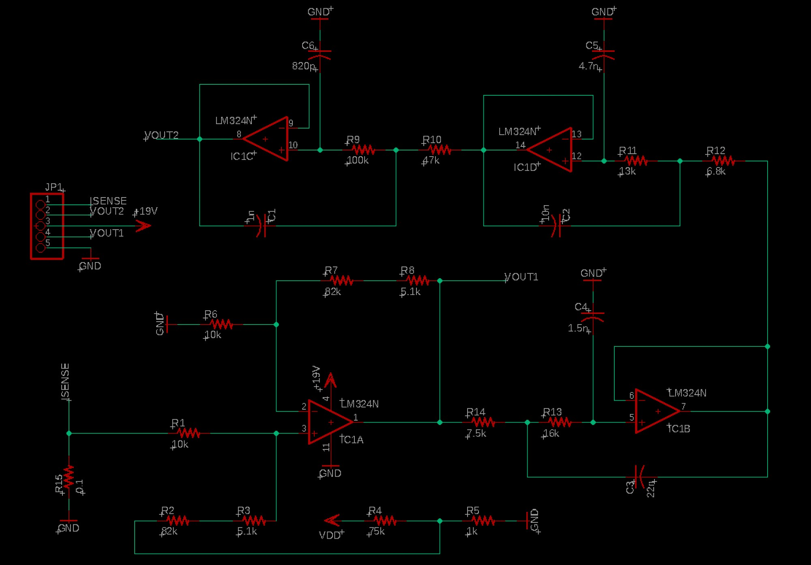

Adjustable DC Power Supply
PCB Layout

Schematic

Overview
MIE346 runs a semester-long design assignment series where each year's cohort tackles a different electronics project. This year, the project was a low-cost adjustable DC lab power supply. The supply takes 19V DC input from a laptop adapter and produces an adjustable 0 to 15V output with a 0 to 3A current limit, regulated by a switching regulator and STM32 microcontroller.
We designed the current sense amplifier and filter: the analog sub-circuit responsible for measuring output current via a 0.1 Ω shunt resistor and conditioning the signal into a 0.25 to 3.3V range readable by the microcontroller's ADC. This is the feedback path that enables the supply's current limiting behaviour.
Reflections
This was my first time designing a PCB, and the first time in almost ten years of schooling that circuits felt useful. From grade school onwards, finding voltages and currents was always an abstract exercise. MIE346 changed that completely. You put a signal in, you manipulate it with components you chose, and you get a deterministic output. Watching that happen in the lab, in real time, matching the math and the simulation, was genuinely exciting.
Eagle was a challenge, particularly around component placement and trace routing on a board this dense. Soldering was new too, and I found both surprisingly enjoyable. This project cemented an interest in integrated circuits and analog design that I didn't expect coming into the course.
Circuit Design
The circuit uses all four op-amp sections of the LM324N across two parallel signal chains. IC1A serves as a differential summing amplifier, combining the shunt voltage with a reference set by a resistor divider. The remaining three stages (IC1B through IC1D) act as active filters, providing gain, frequency roll-off, and scaling to condition the signal for the microcontroller's ADC input range.
Both output chains use small capacitors for high-frequency noise rejection. Resistor values in the gain networks were calculated from the required transfer functions, then selected to the nearest E96 standard values. The design was simulated in LTspice before layout.
PCB Layout
The two-layer board was laid out in Eagle. The top copper layer carries signal traces; the bottom layer handles return paths and cross-unders. Layout priorities included keeping signal traces short between the input connector and the first op-amp stage to minimise parasitic capacitance, placing decoupling capacitors close to IC power pins, routing a clean ground return on the bottom layer, and maintaining adequate copper clearance for the +19V supply traces. The design passed DRC and Gerber files were generated for fabrication.